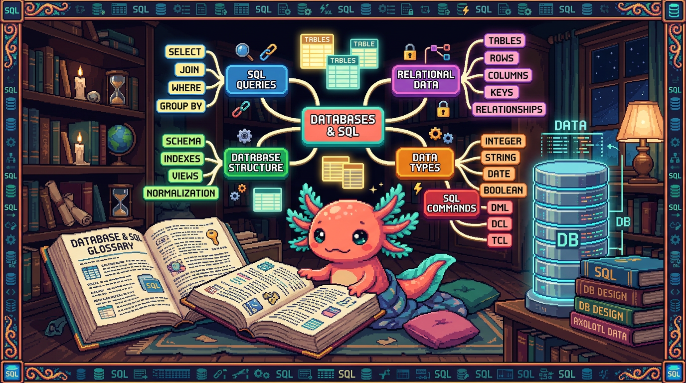

Capitulo 15 — Glosario de bases de datos y mapa

Hola otra vez. Soy Bit, tu ajolote guia. Llegaste al final del Modulo 07 y eso merece un aplauso con mis cuatro patitas. Este capitulo es distinto: no hay teoria nueva pesada. Es un glosario ordenado de la A a la Z con todos los terminos que vimos, cada uno explicado en una o dos lineas, mas un mapa mental para ver como encaja todo. Piensa en este capitulo como el mapa que dejas pegado en la pared: cuando se te olvide que era un
JOINo que rayos es la RLS, vuelves aqui, lo lees en diez segundos y sigues. Vamos despacito y al final te digo como sigue la aventura en el Modulo 08.
1. Como usar este glosario
Cada termino viene en un recuadro con tres cosas: que significa (en palabras de cocina, sin tecnicismos), para que sirve y donde se usa en un repo real de los tuyos. Los repos que vamos a citar son siempre estos cinco, ni uno mas:
- tunal-digital — un sitio web hecho con HTML, CSS y JavaScript a mano (vanilla). No tiene base de datos.
- PolyPaw — app en Python con Flet que guarda sus datos en archivos JSON. Tampoco usa base de datos relacional. Nos sirve para contrastar.
- RachaSimple — app de habitos con Supabase/Postgres: tablas de habitos, registros de racha y perfiles, con RLS y TanStack Query.
- Faro/Organizer — app en Next.js + Supabase/Postgres: proyectos, fases y conexiones de usuario, con RLS, y usa OpenAI para analizar.
- polypaw-nas — un servidor casero con Ubuntu, Samba, Cockpit y Tailscale. Guarda archivos, no es base de datos.
💡 Tip
Casi todos los ejemplos de SQL los puedes pegar tal cual en el editor SQL de Supabase (panel web). Es como tener una libreta donde pruebas frases y la base de datos te responde al instante.
2. Glosario alfabetico
A
🟦 ¿Que significa? — Agregacion
Tomar muchas filas y resumirlas en un solo numero: contar, sumar, promediar. Sirve para responder preguntas tipo "¿cuantos?" o "¿cuanto en total?". En RachaSimple la usamos para contar cuantos registros de racha tiene un habito.
🟦 ¿Que significa? — Alias
Un apodo corto que le pones a una tabla o columna en la consulta con
as. Sirve para escribir menos y leer mejor. En Faro unselectlargo de proyectos puede usarpcomo alias de la tablaproyectos.
B
🟦 ¿Que significa? — Base de datos
Un lugar organizado donde se guardan datos para buscarlos y cambiarlos rapido y sin perderlos. Sirve para que la app recuerde cosas entre sesiones. RachaSimple y Faro tienen una base de datos Postgres en Supabase; PolyPaw NO (guarda todo en archivos JSON).
🟦 ¿Que significa? — Backup (respaldo)
Una copia de seguridad de los datos por si algo se rompe. Sirve para dormir tranquilo. En polypaw-nas los respaldos son copias de archivos por Samba; en Supabase la plataforma respalda la base Postgres por ti.
C
🟦 ¿Que significa? — Clave primaria (primary key)
Una columna cuyo valor es unico para cada fila e identifica esa fila sin confusion (normalmente un
id). Sirve para senalar "esta fila y no otra". En RachaSimple, cada fila de la tablahabitostiene suidcomo clave primaria.🟦 ¿Que significa? — Clave foranea (foreign key)
Una columna que apunta a la clave primaria de otra tabla, creando un vinculo entre ambas. Sirve para conectar datos relacionados sin repetirlos. En Faro, la tabla
fasestiene unproyecto_idque apunta alidde la tablaproyectos.🟦 ¿Que significa? — Columna (campo)
Cada uno de los datos que describe una fila; es una "casilla" con nombre y tipo. Sirve para guardar un dato concreto. En RachaSimple, la tabla
perfilestiene columnas comonombreycreado_en.🟦 ¿Que significa? — Consulta (query)
Una pregunta que le haces a la base de datos en lenguaje SQL. Sirve para leer, filtrar o cambiar datos. En Faro cada vez que abres tu lista de proyectos se dispara una consulta a Postgres.
-- Una consulta simple en RachaSimple: traer todos los habitos
select * from habitos;
D
🟦 ¿Que significa? — Dato
La pieza minima de informacion: un nombre, una fecha, un numero. Sirve para describir algo del mundo real. En PolyPaw un dato puede ser el nombre de una mascota guardado en un JSON; en RachaSimple ese mismo tipo de dato vive en una columna de Postgres.
🟦 ¿Que significa? — DELETE
La orden SQL para borrar filas. Sirve para eliminar datos que ya no quieres. En RachaSimple, borrar un habito que abandonaste usa
delete.
-- Borrar el habito con id 7 (¡siempre con WHERE!)
delete from habitos where id = 7;
⚠️ Cuidado
deletesinwhereborra toda la tabla. Bit ha visto a humanos sudar frio por esto. Antes de borrar, prueba con unselectque tenga el mismowherepara ver que filas van a desaparecer.
E
🟦 ¿Que significa? — Editor SQL (de Supabase)
Una pantalla web donde escribes SQL y ves la respuesta al instante, sin instalar nada. Sirve para probar y aprender. Tanto RachaSimple como Faro comparten que su Postgres vive en Supabase, asi que su editor SQL es donde practicas.
🟦 ¿Que significa? — Esquema (schema)
El "plano" de la base de datos: que tablas existen, sus columnas y sus tipos. Sirve para saber como esta organizado todo. En Faro el esquema incluye
proyectos,fasesyconexiones_usuario.
F
🟦 ¿Que significa? — Fila (registro / row)
Una linea completa de una tabla; representa una cosa (un habito, un proyecto). Sirve para guardar un elemento entero con todos sus datos. En RachaSimple, cada fila de
registros_rachaes un dia marcado como cumplido.🟦 ¿Que significa? — Filtro
Quedarte solo con las filas que cumplen una condicion, usando
where. Sirve para no traer todo, solo lo que te importa. En Faro, filtrar proyectos por usuario es lo que evita que veas los proyectos de otros.
G
🟦 ¿Que significa? — GROUP BY
Agrupar filas que comparten un valor para resumirlas juntas (casi siempre con una agregacion). Sirve para responder "¿cuanto por cada categoria?". En RachaSimple, agrupar
registros_rachaporhabito_idte dice cuantas marcas tiene cada habito.
-- Cuantos registros de racha tiene cada habito
select habito_id, count(*) as total
from registros_racha
group by habito_id;
H
🟦 ¿Que significa? — HAVING
Como un
where, pero para filtrar despues de agrupar congroup by. Sirve para quedarte solo con grupos que cumplen algo. En RachaSimple, mostrar solo habitos con mas de 10 registros usahaving.
select habito_id, count(*) as total
from registros_racha
group by habito_id
having count(*) > 10;
I
🟦 ¿Que significa? — Indice (index)
Una estructura extra que la base crea para encontrar filas rapido, como el indice al final de un libro. Sirve para que las busquedas no tarden. En Faro, una columna como
proyecto_idque se busca mucho se beneficia de un indice.🟦 ¿Que significa? — INSERT
La orden SQL para agregar filas nuevas. Sirve para meter datos. En RachaSimple, marcar el habito de hoy hace un
insertenregistros_racha.
insert into registros_racha (habito_id, fecha)
values (3, '2026-06-26');
J
🟦 ¿Que significa? — JOIN
Unir dos tablas en una sola respuesta combinando sus filas por una columna en comun (normalmente clave primaria con clave foranea). Sirve para juntar datos que viven separados. En Faro, un
joinuneproyectoscon susfasespara mostrarlas en la misma pantalla.
-- Cada proyecto con el nombre de sus fases (Faro)
select proyectos.nombre, fases.titulo
from proyectos
join fases on fases.proyecto_id = proyectos.id;
💡 Tip
El
joinse lee asi: "pegame las filas defasesdonde suproyecto_idcoincida con eliddel proyecto". Si la condicion delonesta mal, te salen combinaciones que no tienen sentido.
K
🟦 ¿Que significa? — Key (llave)
Palabra inglesa para "clave". Cuando leas
primary keyoforeign keyen codigo, es lo mismo que clave primaria y clave foranea. Aparece en las migraciones de RachaSimple y Faro al definir las tablas.
L
🟦 ¿Que significa? — LIMIT
Recortar la respuesta a un numero maximo de filas. Sirve para no traer miles de filas cuando solo quieres ver unas pocas. En Faro, mostrar "los ultimos 5 proyectos" usa
limit 5.
select * from proyectos order by creado_en desc limit 5;
M
🟦 ¿Que significa? — Migracion
Un archivo con instrucciones SQL que cambia la estructura de la base (crear tablas, agregar columnas) de forma ordenada y repetible. Sirve para que todos tengan la misma base y haya historial de cambios. En Faro, crear la tabla
fasesfue una migracion.🟦 ¿Que significa? — Milestone (hito)
Un punto importante marcado dentro de un proyecto. Sirve para medir avance. En Faro, el progreso de un proyecto se calcula de forma hibrida entre milestones cumplidos y lo que sugiere la IA.
N
🟦 ¿Que significa? — NULL
Un valor especial que significa "no hay dato aqui" (vacio), distinto de cero o de texto vacio. Sirve para representar informacion ausente. En Faro, un proyecto recien creado puede tener
descripcionennullhasta que la IA la genere.⚠️ Cuidado
nullno se compara con=. Para preguntar si algo esta vacio se usais nullois not null, no= null. Es una trampa clasica de principiante.
O
🟦 ¿Que significa? — OAuth
Una forma segura de iniciar sesion usando otra cuenta (Google, GitHub) sin darle tu contrasena a la app. Sirve para autenticarte sin manejar passwords. En Faro, conectas tu GitHub y Google Drive por OAuth a traves de Supabase Auth.
🟦 ¿Que significa? — OpenAI
Un servicio de inteligencia artificial que recibe texto y genera respuestas. Sirve para automatizar redaccion o analisis. En Faro, OpenAI genera la descripcion, el estado y el roadmap de cada proyecto.
🟦 ¿Que significa? — ORDER BY
Ordenar las filas de la respuesta por una columna, ascendente (
asc) o descendente (desc). Sirve para presentar datos en un orden util. En RachaSimple, los registros de racha se ordenan porfecha.
P
🟦 ¿Que significa? — Postgres (PostgreSQL)
Una base de datos relacional gratuita y muy robusta; es la que usa Supabase por debajo. Sirve para guardar datos en tablas con SQL. RachaSimple y Faro corren sobre Postgres; PolyPaw no usa Postgres (usa JSON).
🟦 ¿Que significa? — Politica (policy de RLS)
Una regla escrita en SQL que dice quien puede ver o tocar que filas. Sirve para que cada usuario acceda solo a lo suyo. En RachaSimple, una politica deja que cada persona vea unicamente sus propios habitos.
-- Politica: cada quien solo ve sus habitos (RachaSimple)
create policy "ver mis habitos"
on habitos for select
using (auth.uid() = usuario_id);
🟦 ¿Que significa? — Primary key
Es el termino en ingles de clave primaria (ver mas arriba). Lo veras tal cual en las migraciones de Faro y RachaSimple.
Q
🟦 ¿Que significa? — Query
Termino en ingles para consulta (ver "C"). En Faro, las queries a Postgres pasan por el cliente de Supabase desde Next.js.
R
🟦 ¿Que significa? — Relacion / relacional
Que las tablas se conectan entre si por claves (relaciones). Una base "relacional" organiza datos en tablas vinculadas. RachaSimple y Faro son relacionales; PolyPaw, con sus JSON sueltos, no lo es.
🟦 ¿Que significa? — RLS (Row Level Security)
Seguridad a nivel de fila: Postgres revisa, fila por fila, si tienes permiso, segun las politicas. Sirve para proteger datos privados aunque compartan tabla. En Faro y RachaSimple, la RLS impide que un usuario lea datos de otro.
🟦 ¿Que significa? — Roadmap
Una lista ordenada de lo que falta por hacer en un proyecto. Sirve para ver el camino. En Faro, la IA genera el roadmap de cada proyecto y tu lo vas marcando.
S
🟦 ¿Que significa? — SELECT
La orden SQL para leer datos: dices que columnas quieres y de que tabla. Sirve para consultar sin cambiar nada. En RachaSimple, ver tu lista de habitos es un
selectsobre la tablahabitos.
select nombre, creado_en from habitos;
🟦 ¿Que significa? — SQL
El idioma para hablar con bases de datos relacionales (Structured Query Language). Sirve para leer, agregar, cambiar y borrar datos. Lo usas en RachaSimple y Faro; en PolyPaw no, porque ahi se leen archivos JSON con Python.
🟦 ¿Que significa? — Supabase
Una plataforma que te da Postgres, autenticacion (Auth), almacenamiento y APIs listas, todo alrededor de una base de datos. Sirve para tener backend sin montar servidores. RachaSimple y Faro usan Supabase.
// Cliente de Supabase leyendo habitos (RachaSimple, TypeScript)
const { data, error } = await supabase
.from('habitos')
.select('id, nombre');
🔎 En tu codigo
En RachaSimple ese
supabase.from('habitos').select(...)por debajo se traduce a unselectde SQL contra Postgres. El cliente te ahorra escribir SQL a mano, pero la RLS sigue mandando: solo recibes tus filas.
T
🟦 ¿Que significa? — Tabla
Una cuadricula con filas y columnas que guarda cosas del mismo tipo (todos los habitos, todos los proyectos). Sirve para organizar datos parecidos juntos. En RachaSimple hay tablas
habitos,registros_rachayperfiles.🟦 ¿Que significa? — TanStack Query
Una libreria del frontend que pide datos al servidor, los guarda en cache y los refresca solito. Sirve para no recargar de mas y mantener la pantalla al dia. En RachaSimple maneja las consultas a Supabase desde la interfaz.
🟦 ¿Que significa? — Tipo (de dato)
La clase de dato que admite una columna: texto, numero, fecha, booleano (verdadero/falso). Sirve para que la base valide y guarde bien. En Faro,
creado_enes de tipo fecha-hora ynombrees de tipo texto.🟦 ¿Que significa? — Transaccion
Un grupo de cambios que se aplican todos o ninguno: si uno falla, se deshace todo. Sirve para no dejar datos a medias. En RachaSimple, crear un habito y su primer registro juntos puede ir en una transaccion para que no quede uno sin el otro.
💡 Tip
Piensa en una transaccion como un sobre que cierras: o entregas el sobre completo o no entregas nada. Asi la base nunca queda en un estado raro a la mitad.
U
🟦 ¿Que significa? — UPDATE
La orden SQL para cambiar datos de filas que ya existen. Sirve para corregir o actualizar. En Faro, cuando la IA genera la descripcion de un proyecto, se hace un
updatede la fila.
update proyectos
set descripcion = 'App de habitos diarios'
where id = 12;
🟦 ¿Que significa? — Usuario (auth.uid)
La persona que inicio sesion; Postgres conoce su identificador con
auth.uid(). Sirve para que las politicas sepan de quien son los datos. En RachaSimple y Faro, las politicas de RLS comparanauth.uid()con la columna del dueno.
V
🟦 ¿Que significa? — Vista (view)
Una consulta guardada con nombre que se usa como si fuera una tabla. Sirve para reutilizar consultas largas sin repetirlas. En Faro, una vista podria juntar proyectos con su numero de fases para mostrarlo facil.
🟦 ¿Que significa? — Variable de entorno
Un valor secreto o de configuracion que vive fuera del codigo (claves, URLs). Sirve para no commitear secretos. En Faro, la clave de OpenAI y las de Supabase van en variables de entorno solo del servidor.
⚠️ Cuidado
Nunca pongas la clave de OpenAI ni los tokens en el codigo del cliente. En Faro los secretos viven en el servidor y en
user_connectionsprotegida con RLS. Regla del dueno del proyecto: secretos solo en el servidor.
W
🟦 ¿Que significa? — WHERE
La parte de la consulta que pone la condicion para elegir filas. Sirve para filtrar (ver "Filtro"). En RachaSimple, traer solo el habito de id 3 usa
where id = 3.
select * from habitos where id = 3;
Otros que conviene recordar
🟦 ¿Que significa? — JSON
Un formato de texto para guardar datos como pares "nombre: valor". Sirve para almacenar o intercambiar datos sencillos sin base de datos. En PolyPaw los datos viven en archivos JSON; es justo lo contrario a las tablas de Postgres de RachaSimple.
🟦 ¿Que significa? — COUNT / SUM / AVG
Funciones de agregacion:
countcuenta filas,sumlas suma,avgsaca promedio. Sirven para resumir. En RachaSimple,count(*)cuenta cuantos dias llevas en un habito.
3. Mapa mental del modulo
Aqui esta todo el modulo en un solo dibujo de palabras. Leelo de arriba hacia abajo.
BASE DE DATOS (Postgres)
|
┌────────────────────────┼────────────────────────┐
| | |
GUARDAR CONSULTAR PROTEGER
| | |
Tablas SELECT ... FROM RLS (seguridad
├─ Filas ├─ WHERE (filtrar) por fila)
├─ Columnas (tipo) ├─ ORDER BY (ordenar) └─ Politicas
├─ Clave primaria ├─ LIMIT (recortar) (auth.uid)
└─ Clave foranea ─────┐ ├─ JOIN (unir tablas)
| └─ GROUP BY + agregacion
Cambiar datos: | (COUNT/SUM/AVG)
├─ INSERT | └─ HAVING (filtrar grupos)
├─ UPDATE |
└─ DELETE conecta tablas
relacionadas
|
Estructura:
├─ Migraciones (crear/cambiar tablas)
└─ Indices (buscar rapido)
TODO ESTO VIVE EN: Supabase ──→ Auth (OAuth) ──→ cliente
(TanStack Query
en RachaSimple,
Next.js en Faro)
💡 Tip
Si memorizas solo una linea de este mapa, que sea esta: guardas en tablas, consultas con SELECT, proteges con RLS. Todo lo demas son detalles que cuelgan de esos tres clavos.
4. Donde encaja cada repo
🔎 En tu codigo
No todos tus proyectos usan base de datos, y eso esta bien. Asi se reparten: - RachaSimple y Faro: Postgres en Supabase, con SQL, RLS y politicas. Son tus dos ejemplos "de verdad" de este modulo. - PolyPaw: datos en archivos JSON con Python/Flet. Sirve para ver el contraste: sin tablas, sin SQL, sin RLS. Cuando los datos crecen, un JSON se queda corto y ahi entra Postgres. - tunal-digital: HTML/CSS/JS a mano, sin datos persistentes. No toca nada de este modulo. - polypaw-nas: guarda archivos (Samba) sobre Ubuntu; es almacenamiento, no base de datos relacional.
5. Repaso final del modulo
Recordemos el viaje, sin codigo, solo ideas:
- Una base de datos guarda datos en tablas con filas y columnas, y cada columna tiene un tipo.
- Cada fila se identifica con una clave primaria; las tablas se conectan con claves foraneas.
- Lees datos con SELECT, filtras con WHERE, ordenas con ORDER BY y recortas con LIMIT.
- Unes tablas con JOIN y resumes con GROUP BY + agregaciones (COUNT/SUM/AVG), filtrando grupos con HAVING.
- Cambias datos con INSERT, UPDATE y DELETE (siempre con cuidado del
where). - Los indices aceleran las busquedas; las migraciones cambian la estructura de forma ordenada; las transacciones agrupan cambios "todo o nada".
- Postgres es el motor; Supabase lo envuelve con Auth (OAuth), y protege filas con RLS y politicas que comparan
auth.uid()con el dueno del dato. - En el frontend, TanStack Query (RachaSimple) o el cliente de Supabase en Next.js (Faro) piden esos datos.
Si lees esos ocho puntos y todos te suenan, dominaste el Modulo 07. Bit esta orgulloso y mueve las branquias de la emocion.
6. Como sigue: Modulo 08 (APIs, OAuth e IA)
Ya sabes guardar y consultar datos. El siguiente paso es hacer que tu app hable con otros servicios. En el Modulo 08 veras:
- APIs: como una app le pide datos a otra por internet (por ejemplo, Faro pidiendo tus repos a GitHub).
- OAuth a fondo: el inicio de sesion seguro que ya asomamos, ahora explicado paso a paso (Faro conecta GitHub y Google Drive).
- IA con OpenAI: como Faro manda texto a OpenAI y recibe la descripcion, el estado y el roadmap de un proyecto, y como cuidar la clave en variables de entorno del servidor.
La buena noticia: la base de datos que ya entiendes es justo donde se guardan las respuestas de esas APIs y de la IA. El Modulo 07 fue el cimiento; el 08 construye la casa encima.
Nos vemos en el Modulo 08. Lleva tu glosario contigo. — Bit el ajolote.
✅ Checklist — ¿ya domino esto?
- [ ] Puedo explicar con mis palabras que es una base de datos, una tabla, una fila y una columna.
- [ ] Distingo entre clave primaria y clave foranea y se para que sirve cada una.
- [ ] Se leer datos con SELECT y filtrar con WHERE.
- [ ] Entiendo que hace un JOIN y por que necesita una columna en comun.
- [ ] Se que es una agregacion y como GROUP BY resume filas.
- [ ] Puedo explicar que es Postgres y que papel juega Supabase encima.
- [ ] Entiendo que la RLS y las politicas protegen las filas de cada usuario.
- [ ] Se que es una migracion, un indice y una transaccion, aunque sea a grandes rasgos.
- [ ] Puedo decir por que PolyPaw (JSON) NO es una base de datos relacional y RachaSimple/Faro si.
- [ ] Se donde NO deben ir los secretos (nunca en el cliente; solo en el servidor).
🧪 Ejercicios
-
💻 Abre el editor SQL de Supabase de RachaSimple (o uno de practica) y escribe un
selectque traiga todas las columnas de la tablahabitos. Despues agrega unwherepara traer solo el habito conid = 1. -
💻 Sobre
registros_racha, escribe una consulta congroup by habito_idycount(*)para contar cuantos registros tiene cada habito. Anade unhaving count(*) > 5y observa que cambia. -
💻 Escribe un
joinque unaproyectosconfases(estilo Faro) mostrandoproyectos.nombreyfases.titulo. Revisa que la condicion delonuse la clave foranea correcta (fases.proyecto_id = proyectos.id). -
Sin computadora: toma este glosario y, tapando las definiciones, intenta explicar en voz alta que es RLS, JOIN y clave foranea. Si te trabas, ese es el termino que toca repasar.
-
Sin computadora: dibuja en una hoja el mapa mental de la seccion 3 de memoria. No tiene que quedar bonito; tiene que tener los tres clavos: guardar, consultar, proteger.
-
💻 (Reto) En el editor SQL, escribe un
updateque cambie ladescripcionde un proyecto y luego unselectpara confirmar el cambio. Asegurate de incluir unwherecon elidcorrecto antes de ejecutar elupdate.